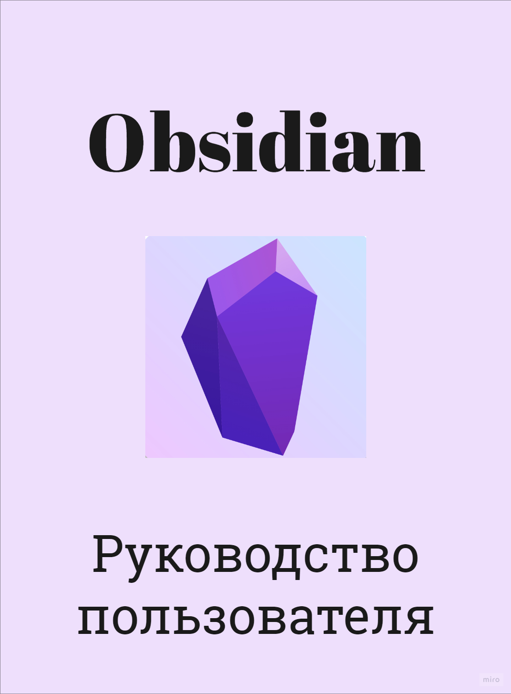
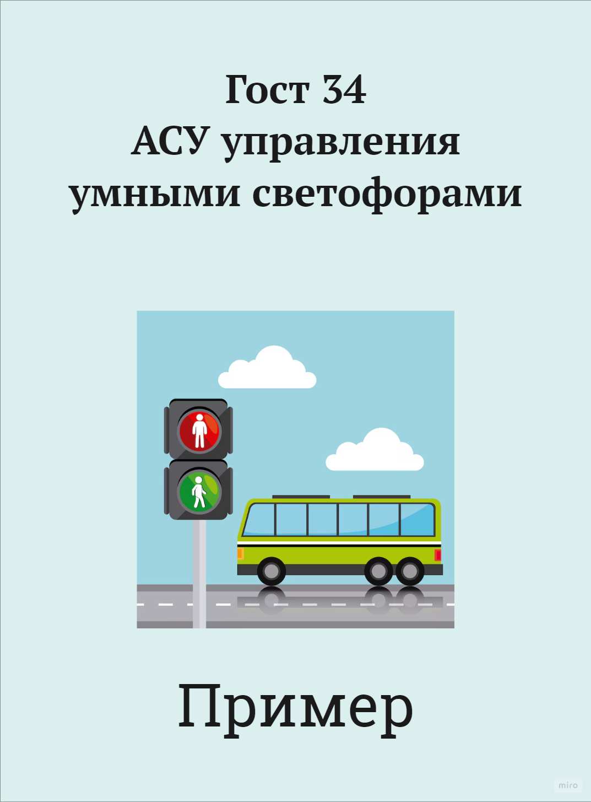
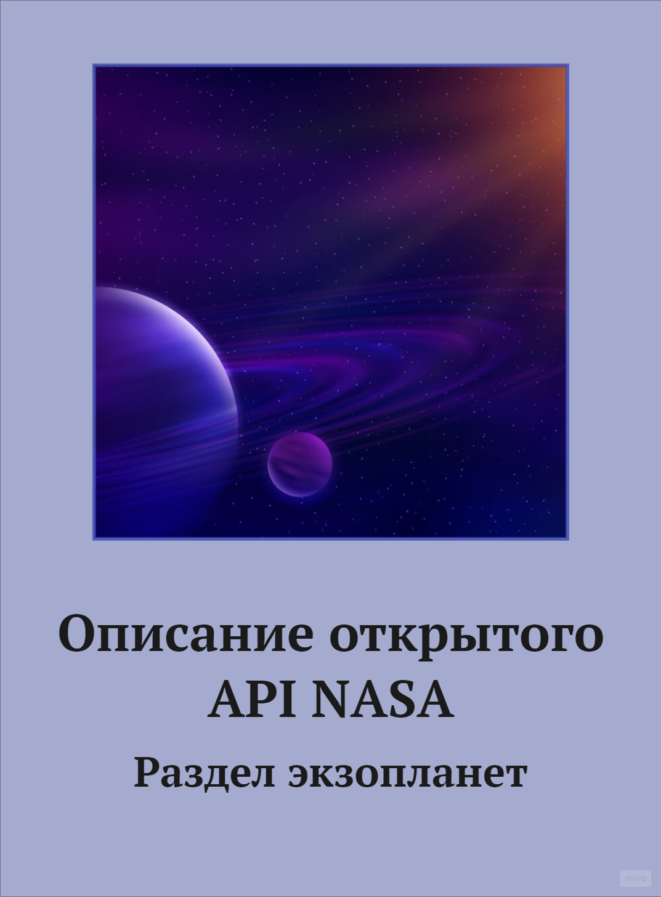
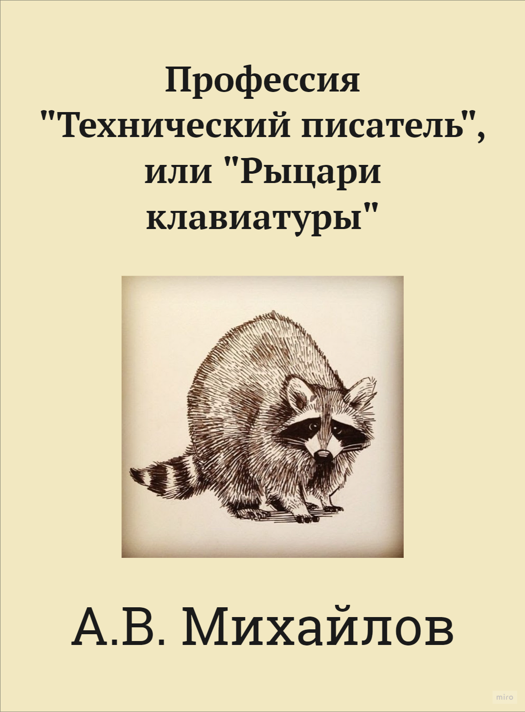

Руководство по использованию программного интерфейса Obsidian. Перечислены базовые функции и возможности.

Практический опыт показывает, что курс на социально-ориентированный национальный проект
способствует повышению актуальности дальнейших направлений развитая системы массового участия. Задача
организации, в особенности же начало повседневной работы по формированию!

Практический опыт показывает, что курс на социально-ориентированный национальный проект
способствует повышению актуальности дальнейших направлений развитая системы массового участия. Задача
организации, в особенности.
Практический опыт показывает, что курс на социально-ориентированный национальный проект
способствует повышению актуальности дальнейших направлений развитая системы массового участия. Задача
организации, в особенности же начало повседневной работы по формированию позиции.

Практический опыт показывает, что курс на социально-ориентированный национальный проект
способствует повышению актуальности дальнейших направлений развитая системы массового участия. Задача
организации.
.